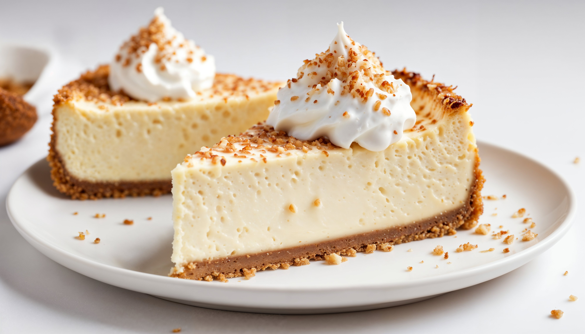
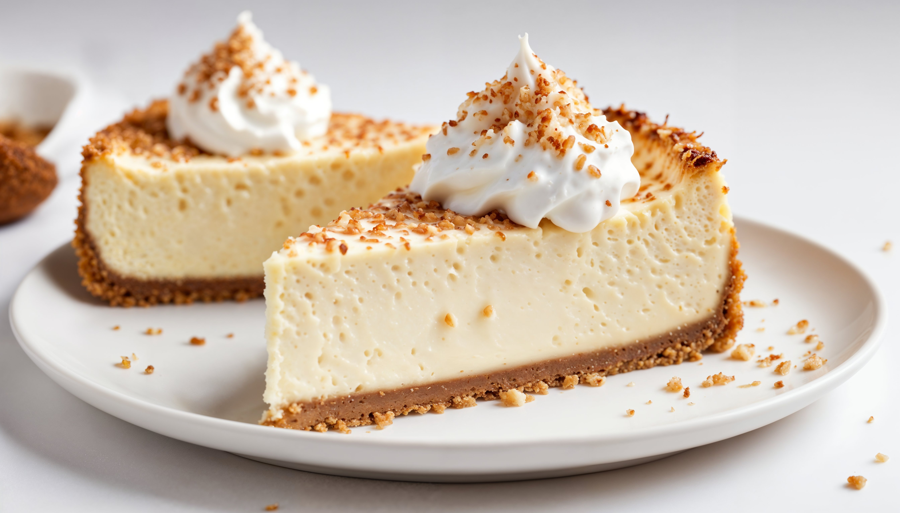

🧁 Cheesecake Recipe (Classic New York Style)
🍰 Cheesecake is a rich, creamy dessert with a buttery biscuit base and smooth cream cheese
filling — pure indulgence in every bite.
 
Prep Time: 25 minutes
🕒 Cook Time: 1 hour + cooling
👩🍳 Serves: 8-10 people

Prep Time: 25 minutes
🕒 Cook Time: 1 hour + cooling
👩🍳 Serves: 8-10 people
🧀 Ingredients
For the Crust
- 1 and ½ cups crushed graham crackers (or digestive biscuits)
- ⅓ cup melted butter
- 2 tbsp sugar
For the Filling
- 900g cream cheese (softened)
- 1 cup granulated sugar
- 1 cup sour cream
- 1 tsp vanilla extract
- 4 large eggs
👩🍳 Instructions
-
Preheat oven to 325°F (160°C). Grease a 9-inch springform pan.
-
Mix graham cracker crumbs, sugar, and melted butter. Press into pan base.
-
Beat cream cheese and sugar until smooth. Add sour cream, vanilla, then eggs one by
one.
-
Pour filling over crust. Bake for 55-60 mins, until center is set but slightly jiggly.
-
Cool completely, then chill for 4 hours before serving.